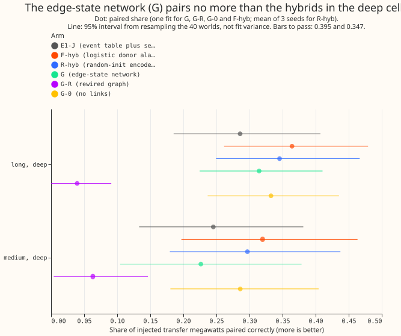

Does a neural network with an explicit state for every link between two Primaries, and a recipient lag, pair more injected load-transfer megawatts than the donor-probe hybrids of experiment 678?
A neural network that learns, hour by hour, whether power is moving between two neighbouring substations, and how long the receiving substation lags the giving one, names the right pair of substations for no more of the transferred power than simpler methods do, so we stop building graph models at 15 substations. We added fake load transfers (power moved from one Primary substation to its neighbours for hours or days) to real power history, and measured the share of the moved megawatts for which each method names the correct giving and receiving substations (the paired share). For transfers longer than 7 days and 8 or more noise units deep (a noise unit is a substation's usual difference between successive 6-hour averages), the new network pairs 0.32 of the megawatts, against 0.29 for the search of experiment 670, 0.35 and 0.36 for the two hybrids of experiment 678, and 0.60 set as the share needed to adopt a method. For transfers of 1 to 7 days and 8 or more noise units, it pairs 0.23, against 0.25, 0.30, and 0.32. Earlier stop rules had closed the graph line (experiment 672 and experiment 678), and the maintainer asked to continue it here. NGED's event labels are an incomplete dump, so counts of real events are lower bounds. A plain-words summary of the whole line is on the event-table summary page.
Terms
- Primary, E1-J, cell, paired, found. As in experiment 678.
- G, G-R, G-0. The edge-state neural network trained and scored on the real graph (G), on a rewired graph that keeps 0.16 of the real links (G-R), and with the link features removed (G-0). G-0 still decodes recipients from the real neighbours.
- F-hyb, R-hyb. The hybrids of experiment 678 with a logistic-regression probe and with a randomly initialised encoder probe.
Figures
The figure shows G inside the intervals of E1-J, F-hyb, R-hyb, and G-0 in both deep cells, and the rewired graph near zero. The bars to pass were 0.395 and 0.347.

Results
- First-look gate: failed. G pairs 0.315 (95% interval 0.22 to 0.41) in the long and deep cell and 0.226 (0.10 to 0.38) in the medium and deep cell. The bars were R-hyb plus 0.05: 0.395 and 0.347. No further seeds were trained.
- Differences, with 95% intervals from resampling 40 worlds. G minus R-hyb: -0.03 (-0.16 to +0.10) and -0.07 (-0.27 to +0.13). G minus E1-J: +0.03 (-0.10 to +0.16) and -0.02 (-0.22 to +0.18). G minus G-0: -0.02 (-0.09 to +0.05) and -0.06 (-0.15 to +0.03). G minus G-R: +0.28 (+0.17 to +0.40) and +0.16 (+0.00 to +0.34).
- Other cells. G pairs 0.18 (long, shallow), 0.22 (medium, shallow; E1-J 0.13, interval of the difference +0.02 to +0.17), 0.08 (short, deep), and 0.02 (short, shallow). G-0 pairs 0.25, 0.18, 0.03, and 0.02.
- Donor megawatts found. Long and deep: G 0.30, G-0 0.39, E1-J 0.44, R-hyb 0.48. Medium and deep: 0.24, 0.31, 0.40, and 0.43.
- Decoder. The decoder grid (4 onset costs by 4 cut-offs, widened to 6 by 6) never reached the band of 3 to 9 decoded donor events per Primary-year on the real record in 2023-07 to 2023-12. G reaches 0.40, and the network's probabilities are near 0 or 1, so the grid barely changes the result. The fallback picked the pair nearest the band: onset cost 2 and cut-off 0.15 in all three arms.
- Real record. G calls 0.31 (2022-01 to 2023-06, the training years), 0.39 (2023-07 to 2023-12), and 0.80 (2024-01 to 2026-06) donor events per Primary-year, against 6.8 events of all kinds for E1.
- False transfers. Decoded transfer events (donor and recipient ends) that are not a correct pair: G 5.9 and G-0 7.4 per Primary-year, against 0.38 for E1-J. G decodes 2.85 donor events per Primary-year on the injected worlds, of which 0.085 are correct pairs and 2.3 have no injected event within 24 days (the generator's hard negatives are not in the truth table, and were not checked as a cause).
- Timing. The median start error of correctly paired recipients is 8 half-hours for G, against 3 for E1-J and 2 for R-hyb.
- Part A (post hoc): ending the added donors after 6 hours instead of 2 days does not help the short cells. Paired share in the short and deep and short and shallow cells stays at 0.08 and 0.027, medium and shallow rises to 0.153 (F-hyb) and 0.155 (R-hyb) against 0.131 for E1-J, and long and deep falls to 0.31 and 0.32 (experiment 678: 0.36 and 0.35). False transfers rise to 0.51 (F-hyb) and 0.52 (R-hyb, mean of 3 seeds) per Primary-year, against 0.38.
- Compute. Each of the three networks took about 25 minutes on the GPU, so the first look used about 1.3 GPU-hours of the 2-hour ceiling.
Predictions
- G1 (G at least R-hyb plus 0.05 in both deep cells): failed (0.315 against 0.395; 0.226 against 0.347).
- G2 (G at least E1-J plus 0.10): failed (0.315 against 0.386; 0.226 against 0.345).
- G3 (G-R at most a third of G in the deep cells): held (0.039 against 0.105; 0.063 against 0.075), but G-R keeps only 0.16 of the real links and has almost no labelled transfers to learn from, so the placebo is near zero by construction.
- G4 (false transfers at most 1.5 times E1-J's, 0.57): failed (5.9).
- G5 (median recipient start error at most 4 half-hours): failed (8).
- H1 (post hoc variant): failed. Medium and shallow gains +0.02 for each hybrid against +0.03 predicted, the short cells gain 0.00, although false transfers stay under 1.5 times E1-J's (0.57) on average over the three R-hyb seeds, and two seeds give 0.58.
- Verdict: not supported. The first look fails G1, so the stop branch applies.
Checks
- Median minus mean forecast, and the mean-forecast error beside each contrast. Not applicable: the experiment scores event tables on injected worlds, not forecasts.
- Triggers fired, and the audit. Three fired: the nested no-link arm G-0 pairs as much as G; the decoder scored 0.706 paired on the 20 validation worlds and 0.315 on the scored worlds; and G's false-transfer rate exceeds its real-record rate. A fresh Sonnet audit re-derived every headline share from the stored rows and found them correct. It traced the validation gap to a small sample (the 0.706 rests on 23 events, interval 0.43 to 0.89) and a slightly easier world construction, and the page does not quote 0.706 as a skill. It found that the decoder grid selection fell through to the nearest-to-band fallback in all arms, so the decoder is not tuned to the validation worlds. It showed that the false-transfer comparison with the real record counted both ends in one number and donors only in the other, now corrected above. It showed that G-0 is not blind to the graph, because the decoder draws recipients from the real neighbours, so G minus G-0 tests only the link features and the message passing.
- Leak tests. Four tests passed in two Sonnet code reviews before the first fit. The masked-window test (1) is vacuous for this network, which masks nothing during fine-tuning, and is kept as a regression check on the inputs of experiment 675. The meaningful tests are the receptive-field test (4), which shows that hours beyond a window's quarter margin do not change the posterior, and the check that labels are read only by the loss (2).
- Unlogged-event caveat. The real-record rates above are lower bounds, because NGED's logs and the E1 mask of real events miss some events.
Method
The question
Experiment 678 added the donor alarms of a probe to E1-J's recipient search and gained +0.08 in the two deep cells (the stop rule asked for +0.10). The hybrids only improve where E1-J looks for a donor. The remaining untested part of the design is a network that carries an explicit state for every link between two connected Primaries, with a lag of 0 to 36 half-hours before the recipient follows, so that the donor and the recipient are found together instead of one after the other. This experiment builds that network once, trains it on injected worlds from a random initialisation, and reads whether it pairs more transfer megawatts than the hybrids do.
Part A: a post hoc variant of experiment 678 (CPU, at most 2 cores)
- Question. Experiment 678's added donors could not end sooner than 2 days after their start, so the short cells equalled E1-J exactly. Do donors that may end after 6 hours or more help the short cells?
- Construction. Everything of experiment 678's donor construction is kept except the earliest end (6 hours after the start instead of 2 days) and the running-median window of the end search (6 hours instead of 1 day). The probe scores, thresholds, duplicate rule, and recipient search are experiment 678's, so the arms are F-hyb and R-hyb (three seeds), each with the changed end rule.
- Reporting. Post hoc; every cell, with the false-transfer rate beside each result, and the deep-cell numbers beside experiment 678's to show what the changed end rule does there.
Part B: the edge-state network (GPU)
A network that reads the node inputs of experiment 675 and outputs, per link and hour, the state of the link and the recipient lag. The construction below is fixed before any run, and it departs from the Opus specification of the line in the ways listed under "Departures from the specification".
- Architecture, node side. The bidirectional encoder of experiment 675 (an hourly stream of 6 dilated convolutions with 64 channels, a daily stream of 4 dilated convolutions with 32 channels, one round of neighbour averaging), from a random initialisation, on the 35 node-input channels of experiment 675.
- Architecture, link side. For each of the 25 links of the real graph and each hour, the features are the two Primaries' encoder outputs, the cross-correlation of the Primaries' 6-hour forward steps at 19 recipient lags (0 to 18 hours at 1-hour spacing), the log ratio of the two steps' amplitudes, and the two Primaries' megawatt-or-megavolt-ampere flags. The link head is antisymmetric by construction: it scores "first donates" on the features in one orientation and "second donates" on the same features swapped, and scores "off" on the symmetrised features. A second head scores the 19 recipient lags given the donating orientation.
- Node side head. Each Primary-hour also gets a three-class state (no step, a downward step, an upward step). Its evidence is added to the link decode, so the two are decoded together.
- Decoder. A three-state chain per link with a fixed stay probability, run forward and backward
over the hours of a world. The onset cost and the link cut-off are chosen on the validation worlds
from a grid frozen in code (at least 4 log-spaced values each), by the highest paired share in the
two deep cells together, subject to 3 to 9 decoded edge events per Primary-year on the real record
in 2023-07 to 2023-12. A greedy pass accepts the link segment with the highest posterior, removes
its hours from the donor Primary, and repeats. Each accepted segment becomes a donor event, with
the size measured on the residual by
step_size, and recipient events at the decoded lag, as the recipient search of experiment 670 emits them. There is no post hoc pairing window. - Training worlds and labels. 200 injected worlds (seeds from 100000, experiment 660's default generator, unchanged). Link labels come from the generator's truth table: the link is "donates" in the donor's hours, the lag is the recipient's start minus the donor's, and all other time is "off" at full weight, except in the hours before 2023-07-01 where E1 decodes an event on the un-injected real record (weight 0). That mask uses no label and no hour from the scored years. Training worlds start their events before 2023-07-01 (the generator's cutoff), so no training onset lies in the validation or scored years. The weight of the transfer states is 5.
- Loss and optimiser. Cross-entropy on the link state (weight 1.0), on the lag (0.3), and on the node state (0.5). AdamW with a learning rate of 1e-3 and cosine decay, windows of 2,880 hours, a batch of 4, half the windows centred on an injected edge transfer. The number of steps follows from timing the first 500 steps against the 2 GPU-hour ceiling; a checkpoint is saved every 1,000 steps and a rerun resumes.
- Arms. G (the network on the real graph), G-R (the same network trained and scored on the degree-preserving rewired graph that keeps the fewest real links, from 300 draws, with the share kept reported), and G-0 (no links: the neighbour averaging in the encoder and the link features are both zeroed, so the link head has no information about neighbours; G minus G-0 is read without a bar). References, read from experiment 678's stored rows: E1-J, F-hyb, and R-hyb.
- Departures from the specification. The following are not built, to keep the first look inside 2 GPU-hours (the brief's logistic baseline is F-hyb, read from experiment 678's stored rows): masked pretraining (experiment 675 found it did not help), the daily-scale pretraining masks, 1,000 or more training worlds (200 are used), the lag-free modular network as the residual panel (experiment 327's arm C is used, as in experiments 670 to 678), the amplitude and recipient-share head, the conservation and wobble terms, the donor head (the node state replaces it), the 16-wide weather embedding, the cross-injector arms, the fine-tuning curriculum, three rounds of message passing (one is built), the boundary loss and half-hour refinement, G-hyb (Part A is a related post hoc test), the timing and real-record rate predictions and the D5 and D16 check, step 0a's diagnosis (done in experiment 675), and the semi-Markov duration prior (a fixed stay probability replaces it). Each departure may make the neural network weaker than the specification, so a failure here is a failure of this smaller neural network.
- Leak tests. Both run in a fresh Sonnet code review, before any GPU fit, on CPU with a fixed seed. First, replacing the residual inside a hidden window (Gaussian noise of 10 noise units, then a step of +20 noise units), with the mask drawn before any statistic is computed and the statistics recomputed from the readings outside it, leaves every node input and every link feature bit-identical in float64, including the cross-correlations, at the masked Primary and its neighbours; a positive control that reads the unmasked panel must fail the same test. Second, replacing a scored world's truth table with a shuffled copy leaves the network's outputs bit-identical, because labels enter only the loss.
Reviews and running
-
Panel caveat. The residual panel, experiment 327's arm C, is the one that experiments 670 to 678 used, and training, validation, and scored worlds share it. The neural network could therefore memorise real residual patterns of the training years. Scored events lie in 2024 to 2026, which the training worlds never show.
-
Order. Sonnet writes the plan and the code. A fresh Sonnet agent has reviewed the plan (findings triaged in the pull request), then two more review the code, one after the other (including both leak tests passing) before the first fit. A fresh Sonnet agent reviews the results and the write-up, and a second reviews the prose. At most one Opus review is added, and only if a verdict could change.
- Running. CPU work runs under
systemd-run --user --scope -p MemoryMax=16G -p OOMPolicy=continue, withOMP_NUM_THREADS=1, at most 2 cores. One GPU process runs at a time, afternvidia-smianduptimeshow that the maintainer's backtests have the GPU free; a fit pauses between networks if they need it. - Inherited caveats. NGED's event labels are an incomplete dump, so matched logged shifts on the real record are lower bounds. The injected start hours come from NGED's logged onsets up to 2026-07, as in experiments 670, 672, 675, and 678.
- Summary page. Whatever the outcome, the PR also adds a plain-words summary page of the whole event-table line (experiments 653, 665, 670, 672, 674, 675, 678, and this one), written after the results.
Files
ml-experiments/00676-*/e00676_worlds.py: builds the 20 validation worlds and the real-record E1 mask (reads experiment 660's generator, writesworlds/).e00676_data.py,e00676_net.py: link, lag, and node labels from the truth table; the edge-state network (reuses experiment 675's encoder and node inputs).e00676_train.py,e00676_run.py,e00676_decode.py: training (weights/<arm>_seed0.pt), decoder selection and scoring on the 40 scored worlds (scored/<arm>_seed0_rows.parquet).e00676_report.py,e00676_chart.py: aggregate rows intosummary.jsonand the figure.e00676_diag.py: real-record event rate by period (scored/G_seed0_real_rate.json).e00676_leaktests.py: the four leak tests.e00676_posthoc.py,e00676_posthoc_report.py: Part A, which patches experiment 678's run and report code and writesposthoc/rows_*.parquet.- Data under
data/ml-experiments/00676-*/, read from earlier experiments: the 200 training worlds and 40 scored worlds of experiment 675 (worlds/), the probe scores of experiment 675 (probe/), and the rows of experiment 678.